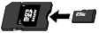

Inserting the Memory Card
 Before Inserting the Memory Card
Before Inserting the Memory Card
The following types of memory cards and image data are compatible with the machine.
 Important ImportantImage data shot by the digital camera
|
 Memory Cards that Do Not Require a Card Adapter
Memory Cards that Do Not Require a Card Adapter
|
|
|
|
Supports Type I/II (3.3 V)
|
|
|
|
Memory Cards that Require a Card Adapter
| Important
If one of the following memory cards is inserted without the card adapter, you may not be able to remove the memory card. In this case, refer to "Troubleshooting" in the on-screen manual: Advanced Guide. |
|
|
|
|

|
|
|
|
|
|
|
|
|
|
|
*1 Use the special "SD Card Adapter".
*2 Requires purchase of a separate compact flash card adapter for xD-Picture Card.
*3 Use the special card adapter.
*4 Use the special Duo size adapter or full size adapter.
Printable Image Data
 This machine accepts images taken with a camera compliant with the Design rule for Camera File system (Exif 2.2/2.21/2.3 compliant), TIFF (Exif 2.2/2.21/2.3 compliant). Other image or movie types such as RAW images cannot be printed.
This machine accepts images taken with a camera compliant with the Design rule for Camera File system (Exif 2.2/2.21/2.3 compliant), TIFF (Exif 2.2/2.21/2.3 compliant). Other image or movie types such as RAW images cannot be printed.
The machine accepts images scanned and saved with the machine when Doc.type is set to Photo and Format is set to JPEG in the scan mode (file extension ".jpg").
Inserting the Memory Card
| Important
|
 Note Note
For details, refer to the on-screen manual: Advanced Guide.
|
Prepare your memory card.
Attach a special card adapter if your memory card requires one.
See Memory Cards that Require a Card Adapter.
Make sure that the power is turned on, and open the Card Slot Cover.
Insert only one memory card into the Card Slot.
The location to insert a memory card varies depending on each type of memory card. Insert your memory card straightforward WITH THE LABELED SIDE FACING TO THE LEFT into the Card Slot, according to the insert location in the figure below.
When the memory card is inserted properly, the Access lamp (A) will light up.
Be sure to attach the card adapter for memory card with the mark  (asterisk), and then insert it into the Card Slot as shown below.
(asterisk), and then insert it into the Card Slot as shown below.
Insert the following types of memory cards into the left Card Slot:
Memory Stick Duo, Memory Stick PRO Duo
Memory Stick Micro (with the Duo size adapter)
Insert the following types of memory cards into the center Card Slot:
SD Secure Digital memory card, SDHC memory card, MultiMediaCard, MultiMediaCard Plus
miniSD Card , miniSDHC Card
, miniSDHC Card
microSD Card , microSDHC Card
, microSDHC Card
Memory Stick, Memory Stick PRO
Memory Stick Micro (with the full size adapter)
RS-MMC
MMCmobile

Insert the following types of memory cards into the right Card Slot:
Compact Flash (CF) Card, Microdrive
xD-Picture Card , xD-Picture Card Type M, xD-Picture Card Type H
, xD-Picture Card Type M, xD-Picture Card Type H
| Important
|
Close the Card Slot Cover.
Removing the Memory Card
| Important
Drag (Mount drive) into the Trash. |
Open the Card Slot Cover.
Make sure that the Access lamp is lit, and remove the memory card.
Hold the part of the memory card that is protruding and remove it straightforward from the machine.
| Important
|
Close the Card Slot Cover.